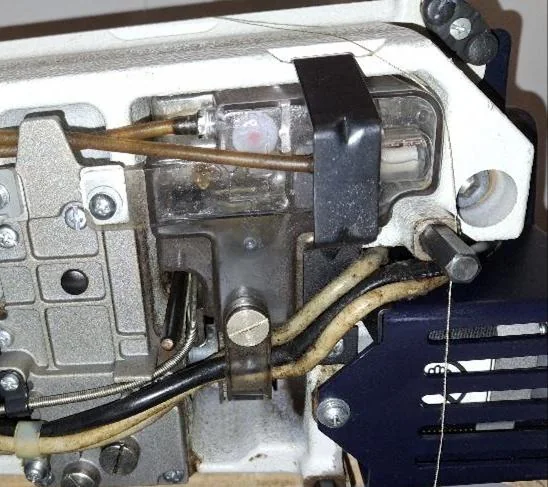
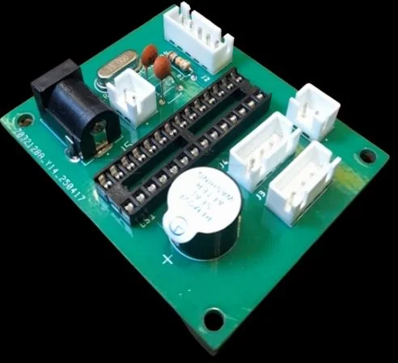
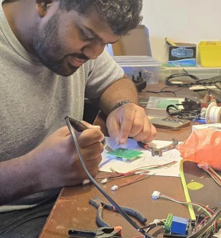
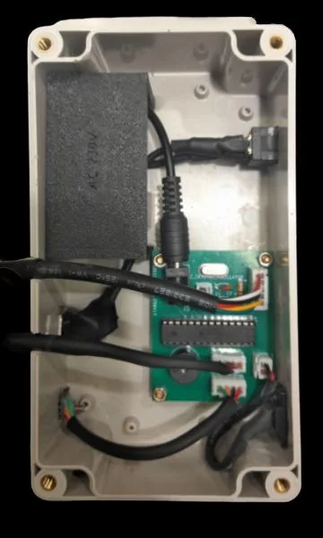
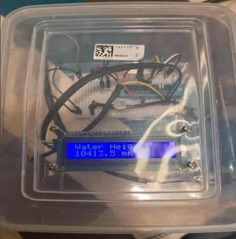
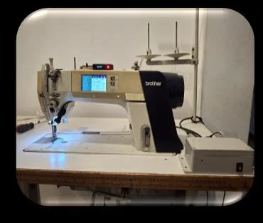

Sensor unit
A pressure sensor connects to the existing oil reservoir through a purpose-built mechanical interface.
Embedded systems / Product prototype
A retrofit oil-level monitoring concept for an industrial sewing machine, using hydrostatic pressure sensing, a custom control PCB and clear operator alerts.

Manual oil checks can be intermittent and depend on operator attention. The concept explored continuous monitoring without redesigning the sewing machine itself.
The retrofit approach measures hydrostatic pressure at the drain-port connection, compensates for ambient pressure and translates the reading into simple visual and audible status alerts.
A pressure sensor connects to the existing oil reservoir through a purpose-built mechanical interface.
An ATmega328P-based PCB processes readings and applies calibrated operating thresholds.
An OLED, indicator LEDs and buzzer communicate normal, low and high oil conditions.
Separate sensor, controller and indicator modules make installation and maintenance more manageable.
I worked across the electronic design and practical prototype, from schematic and PCB development through assembly, firmware behavior and calibration support.
This work demonstrates a developed prototype and engineering process. It is not presented as a certified production product or proof of universal field reliability.
Engineering gallery




